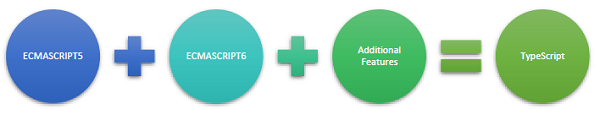

What do you know about Typescript?
TypeScript is just JavaScript!
Features of TypeScript
- TypeScript supports other JS libraries
- JavaScript is TypeScript
- TypeScript is portable.
TypeScript and ECMAScript
Why Use TypeScript?
- Compilation
- Strong Static Typing
- Supports Object Oriented Programming
Components of TypeScript
- Language
- The TypeScript Compiler
- The TypeScript Language Service

Hello, world
tsc greeter.ts //greeter.ts
class Greeter {
constructor(public greeting: string) { }
greet() {
return this.greeting;
}
};
var greeter = new Greeter("What's up");
alert(greeter.greet()); One more example
class Student {
fullName: string;
constructor(public firstName, public middleInitial, public lastName) {
this.fullName = firstName + " " + middleInitial + " " + lastName;
}
}
interface Person {
firstName: string;
lastName: string;
}
function greeter(person : Person) {
return "Hello, " + person.firstName + " " + person.lastName;
}
var user = new Student("Andrew", "A.", "User");
alert(greeter(user));